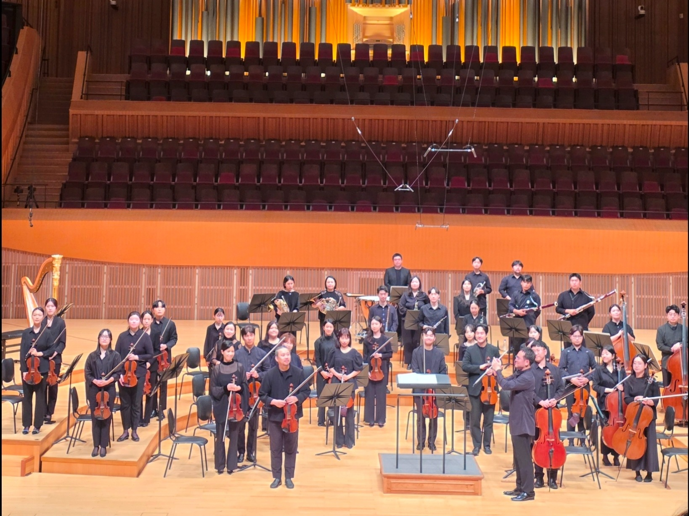
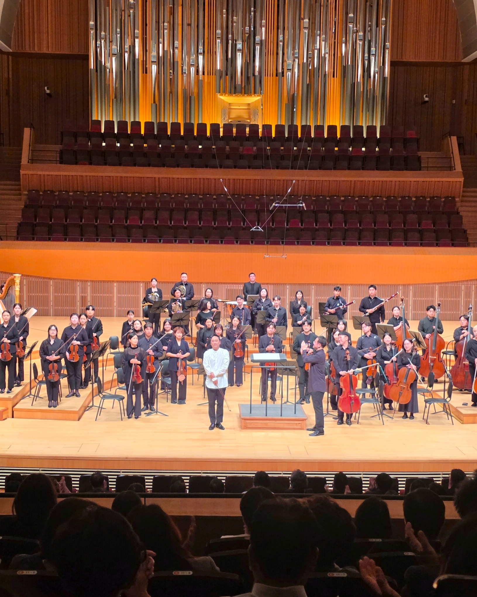
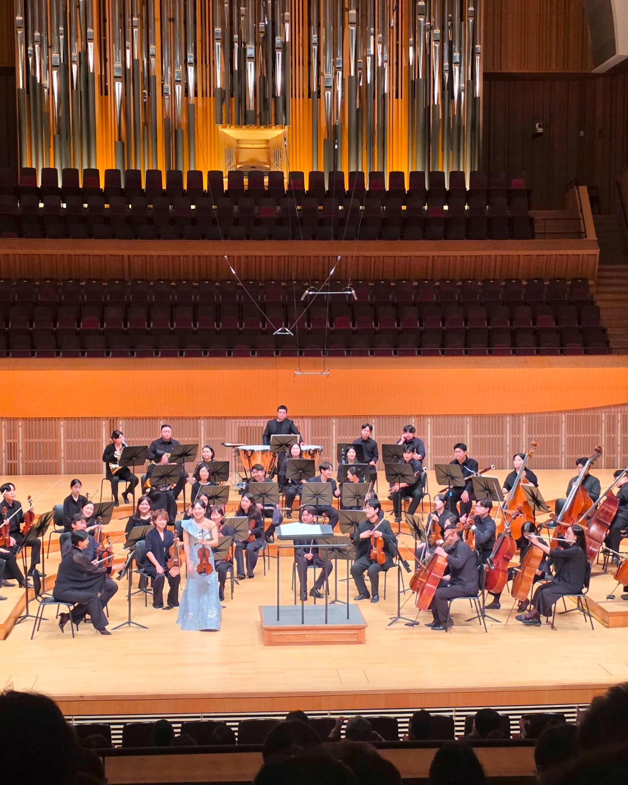

LUDWIG VAN BEETHOVEN · 1770–1827 · 독일 🇩🇪 · 작곡가
Violin Concerto in D major, Op.61
1806 · 고전주의 후기 · D major · 약 42분
ABOUT
독주자의 화려함만 앞세우기보다 바이올린과 오케스트라가 긴 호흡으로 함께 건축하는 협주곡 · 팀파니가 제시하는 네 음의 리듬 동기는 작품 전반에 반복적으로 등장하며 전체 구조를 연결
PianoMoDa PICK · I. Allegro ma non troppo
c. 15:00–18:00 onward · 독주 바이올린보다 오케스트라의 넓고 풍성한 선율이 특히 돋보이는 구간
SIGNIFICANCE바이올린 협주곡 역사에서 가장 중요한 기준점 중 하나 · 베토벤의 유일한 완성 바이올린 협주곡 · 19세기 이후 핵심 표준 레퍼토리
SOLOIST
Violin 이진성
연세대학교 음악대학
Hochschule für Musik Dresden · Master / Meisterklasse
現 리움챔버오케스트라 · M&P챔버오케스트라 악장
MOVEMENTS
I. Allegro ma non troppo · Timpani motif · Expansive orchestral architecture · Broad cantabile lines
II. Larghetto · Theme and variations · Transparent orchestral texture · Increasingly elaborate solo figuration
III. Rondo: Allegro · Rondo form · Buoyant principal theme · Rhythmic interplay between soloist and orchestra
SERGE KOUSSEVITZKY · 1874–1951 · 러시아 🇷🇺 · 지휘자 · 더블베이스 연주자 · 작곡가
Double Bass Concerto in F♯ minor, Op.3
1903–05경 · 후기낭만주의 어법 · F♯ minor · 약 20분
ABOUT
러시아 후기낭만주의의 짙은 서정성 · 더블베이스의 저음뿐 아니라 중·고음역을 적극적으로 활용하며 악기를 성악적인 독주 악기로 다룬 작품
PianoMoDa PICK · III. Allegro
c. 14:00 onward · Rapid double-bass passagework · Chromatic motion · Rhythmic drive
후반부 더블베이스가 빠르게 움직이는 구간 · 반음계적 패시지와 더블베이스 특유의 음색이 만나 순간적으로 재즈 베이스 솔로를 연상시키는 대목
SIGNIFICANCE더블베이스 협주곡의 핵심 표준 레퍼토리 · 전공자에게는 대표적 협주곡, 일반 청중에게는 상대적으로 접하기 어려운 작품 · 독주 더블베이스의 표현 가능성을 상징하는 레퍼토리
SOLOIST
Double Bass 이영수
한국예술종합학교 음악원 졸업
Moscow Tchaikovsky Conservatory · 연주학위
現 서울시립교향악단 더블베이스 부수석 · 서울챔버오케스트라 수석
한국예술종합학교 겸임교수 · 서울대학교 출강 · 한국더블베이스협회 부회장
2026 Giovanni Bottesini International Double Bass Competition · Jury
MOVEMENTS
I. Allegro · F♯ minor · Broad lyrical themes · Dramatic dialogue with the orchestra
II. Andante · Lyrical central movement · Cantabile writing in the middle and upper registers
III. Allegro · Return of first-movement material · Cyclic design · Energetic close
MAX BRUCH · 1838–1920 · 독일 🇩🇪 · 작곡가 · 낭만주의
Violin Concerto No.1 in G minor, Op.26
1866 · 1867 개정 · 낭만주의 · G minor · 약 25분
ABOUT
긴 호흡의 서정적 선율과 강한 감정적 고조 · 제1악장 Vorspiel에서 제2악장 Adagio로 중단 없이 이어지고 화려한 제3악장으로 완결되는 구조
SIGNIFICANCE19세기 낭만주의 바이올린 협주곡의 대표작 · 브루흐를 상징하는 작품 · 오늘날 가장 널리 연주되는 바이올린 협주곡 가운데 하나 · 서정적인 II. Adagio와 강한 리듬 및 비르투오시티가 돋보이는 III. Finale가 뚜렷한 대비를 형성
SOLOIST
Violin 백은교
서울예술고등학교 · 서울대학교 음악대학 장학생 입학·졸업
Indiana University · 전문연주자과정
The Juilliard School · 석사 · 장학생
現 경희대 · 예원학교 · 서울예고 · 수원대 등 출강
MOVEMENTS
I. Vorspiel: Allegro moderato · Prelude-like design · Recitative-like solo writing · Direct transition to the Adagio
II. Adagio · The lyrical heart of the concerto · Expansive cantabile · Interwoven lyrical themes · Sustained emotional arc
III. Finale: Allegro energico · Double-stop writing · Strong rhythmic drive · Brilliant virtuoso close
AFTER THE CONCERT
Concert Postlude
PianoMoDa · 26 Sep 2026
BEETHOVEN · POSTLUDE
Symphonic Scale · Orchestral Voice
ORCHESTRAL LINE · LONG BREATH · SYMPHONIC ARCHITECTURE
독주 바이올린보다 오케스트라가 만들어내는 넓은 선율과 긴 호흡이 더 강하게 남은 작품 · 협주곡이면서도 오케스트라 자체가 중심적인 목소리와 큰 구조를 갖는 느낌이 특히 인상적.

Beethoven · Concert night · Lotte Concert Hall · 26 Sep 2026
KOUSSEVITZKY · POSTLUDE
The Surprise of the Night
PHYSICAL RESONANCE · TONAL RANGE · HARP DIALOGUE · ORCHESTRAL COLOR
유튜브 예습에서는 III. Allegro 후반의 빠른 더블베이스 패시지가 먼저 귀에 들어왔지만, 현장에서는 특정 구간을 고르기 어려울 만큼 협주곡 전체가 인상적 · 가까운 좌석에서 더욱 직접적으로 느껴진 더블베이스의 물리적인 울림과 음압 · 유튜브 영상으로는 충분히 전달되지 않았던 저역의 에너지와 공간감 · 깊은 저음부터 노래하는 중·고음역, 빠른 움직임까지 이어지는 넓은 표현력 · 더블베이스와 하프가 주고받는 음색도 독특하게 남은 순간

Koussevitzky · Double Bass · Concert night · 26 Sep 2026
BRUCH · POSTLUDE
I. VORSPIEL · ORCHESTRAL BUILD-UPORCHESTRAL PICK · 6:00–7:00Gradual build-up · Rising string tension · Expanding orchestral texture
II. ADAGIO · LYRICISM긴 호흡의 서정성과 따뜻한 cantabile가 현장에서 더 선명하게 다가온 악장
III. FINALE · DRIVE현을 넘나드는 움직임 · 강한 rhythmic drive · 시원하게 뻗어나가는 에너지

Bruch · Violin · Concert night · 26 Sep 2026
THE CONCERT
Grand Concerto Concert IV
Lieum Chamber Orchestra · Lotte Concert Hall · 26 Sep 2026
NO ENCORE